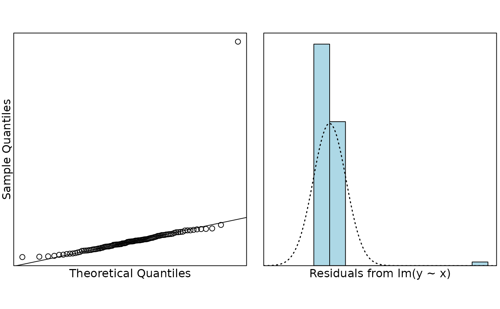
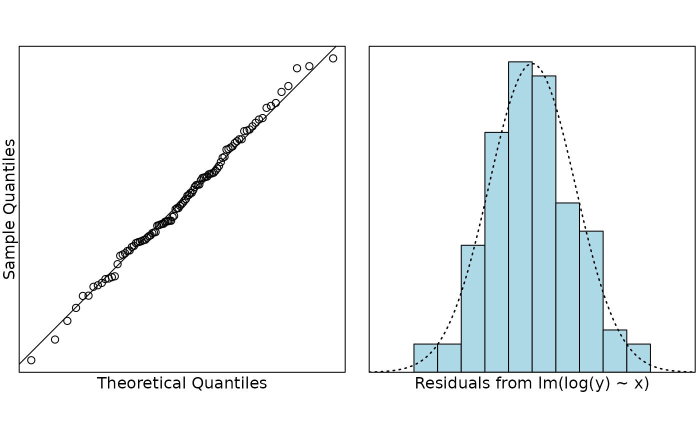
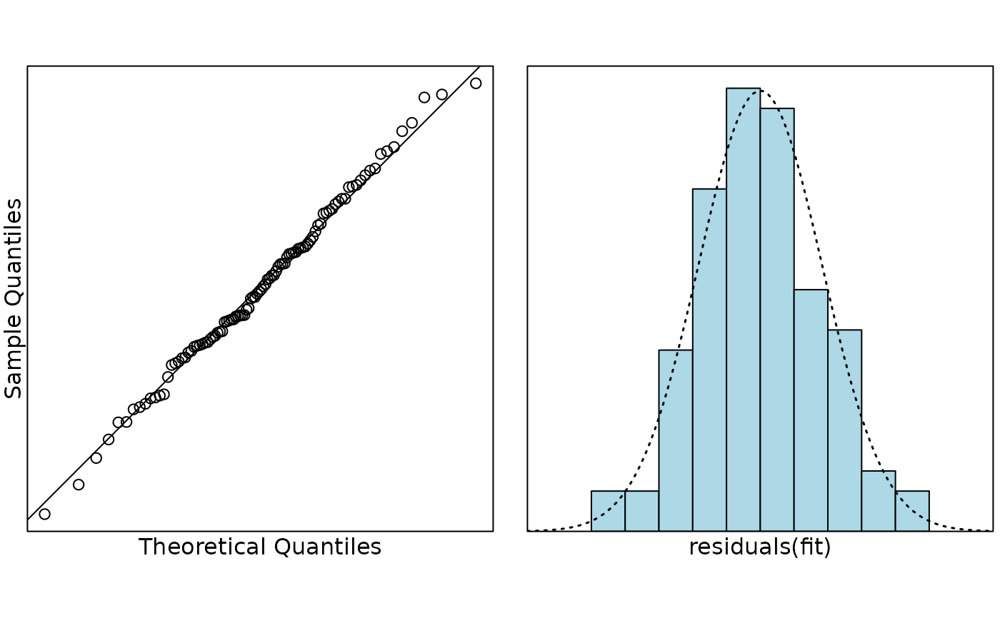
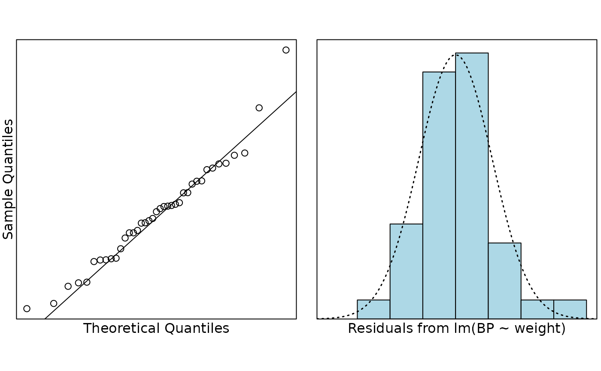
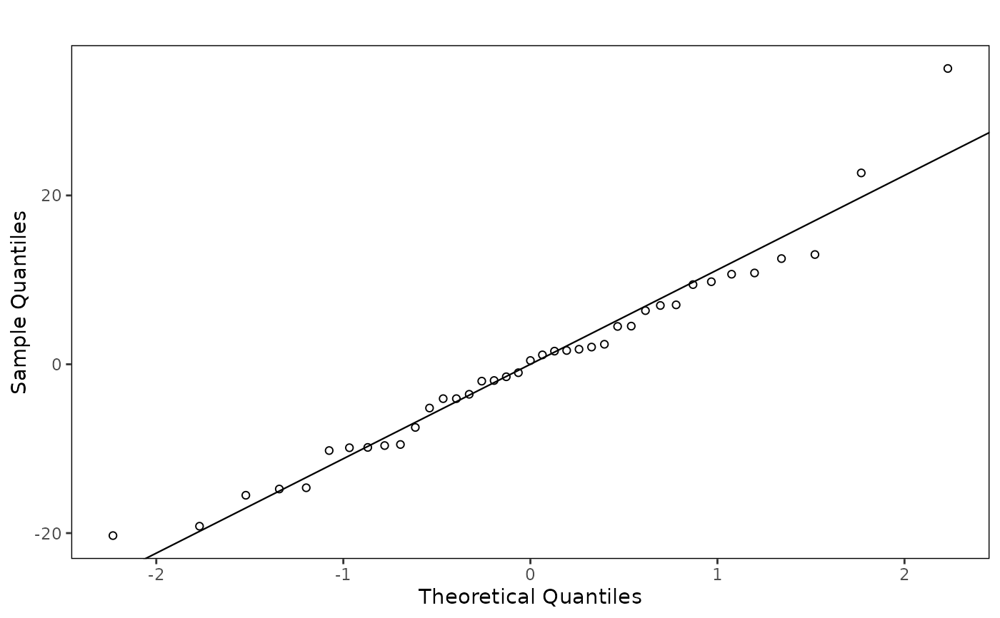
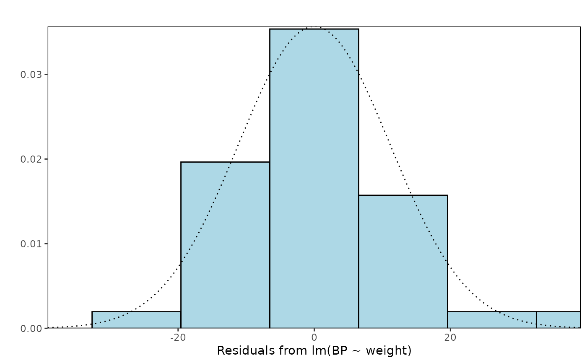

Plots two plots side by side. First, it draws a normal Q-Q plot of the
residuals, along with a line with intercept equal to the mean of the
residuals and slope equal to the standard deviation of the residuals. If
shapiro.wilk = TRUE, the P-value from the Shapiro-Wilk test for
normality is shown in the top-left corner of the Q-Q plot. Second, it draws
a histogram of the residuals. A normal distribution is fitted and
superimposed over the histogram. Note: if you want to leave the
x-axis blank in the histogram then use xlab = c("Theoretical Quantiles", " ")
, i.e. leave a space between the quotes. If you do not leave a space,
information will be extracted from x.
Usage
normcheck(x, ...)
# Default S3 method
normcheck(
x,
xlab = c("Theoretical Quantiles", ""),
ylab = c("Sample Quantiles", ""),
main = c("", ""),
col = "light blue",
bootstrap = FALSE,
B = 5,
bpch = 3,
bcol = "lightgrey",
shapiro.wilk = FALSE,
whichPlot = 1:2,
usePar = TRUE,
engine = c("base", "ggplot2"),
...
)
# S3 method for class 'lm'
normcheck(
x,
xlab = c("Theoretical Quantiles", ""),
ylab = c("Sample Quantiles", ""),
main = c("", ""),
col = "light blue",
bootstrap = FALSE,
B = 5,
bpch = 3,
bcol = "lightgrey",
shapiro.wilk = FALSE,
whichPlot = 1:2,
usePar = TRUE,
engine = c("base", "ggplot2"),
...
)
# S3 method for class 'tslm'
normcheck(
x,
xlab = c("Theoretical Quantiles", ""),
ylab = c("Sample Quantiles", ""),
main = c("", ""),
col = "light blue",
bootstrap = FALSE,
B = 5,
bpch = 3,
bcol = "lightgrey",
shapiro.wilk = FALSE,
whichPlot = 1:2,
usePar = TRUE,
residualType = "normalised",
engine = c("base", "ggplot2"),
...
)Arguments
- x
the residuals from fitting a linear model. Alternatively, a fitted
lmobject.- ...
additional arguments which are passed to both
qqnormandhistfor the base engine. Extra arguments are currently ignored by the ggplot2 engine.- xlab
a title for the x-axis of both the Q-Q plot and the histogram: see
title.- ylab
a title for the y-axis of both the Q-Q plot and the histogram: see
title.- main
a title for both the Q-Q plot and the histogram: see
title.- col
a colour for the bars of the histogram.
- bootstrap
if
TRUEthenBsamples will be taken from a Normal distribution with the same mean and standard deviation asx. These will be plotted in a lighter colour behind the empirical quantiles to show how much variation would be expected in the Q-Q plot for a sample of the same size from a truly normal distribution.- B
the number of bootstrap samples to take. Five should usually be sufficient.
- bpch
the plotting symbol used for the bootstrap samples. Legal values are the same as any legal value for
pchas defined inpar.- bcol
the plotting colour used for the bootstrap samples. Legal values are the same as any legal value for
colas defined inpar.- shapiro.wilk
deprecated. If
TRUE, the P-value from the Shapiro-Wilk test for normality is displayed in the top-left corner of the Q-Q plot.- whichPlot
legal values are
1,2, and any pair of the two, i.e.1:2,2:1,c(1,2),c(2,1), or variants ofc(1,1).1:2is used by default and draws a normal Q-Q plot and a histogram of the residuals in that order. The order of the labels inxlabandylabassume this order, and will be reordered automatically if the order is anything other than1:2.- usePar
if
TRUE, this function setsparfor the user. IfFALSE, this function assumesparhas been set by the user and should not be overridden. Ignored by the ggplot2 engine.- engine
plotting engine to use. The default,
"base", preserves the original base graphics output. Use"ggplot2"for ggplot2 objects.- residualType
for
tslmobjects, the residual scale to use in the normality plots. The default is"normalised", which checks the residuals after accounting for the fitted error correlation structure."normalised"and"normalized"are both accepted for compatibility. Other choices are"response"and"pearson".
Value
Draws the selected normality diagnostic plots when using the base
engine. With engine = "ggplot2", returns a ggplot object for a single
selected plot or a named list of ggplot objects for multiple selected plots.
When multiple ggplot2 plots are selected, printing the returned object draws
the plots side by side to match the base graphics teaching layout.
Details
The default base graphics engine preserves the original teaching plots and draws directly on the active graphics device. The ggplot2 engine is intended for users who want reusable plot objects for reports or further customisation, and returns ggplot objects instead of drawing base graphics side effects.
Examples
# Synthetic teaching example: an exponential growth curve
set.seed(123)
e = rnorm(100, 0, 0.1)
x = rnorm(100)
y = exp(5 + 3 * x + e)
fit = lm(y ~ x)
normcheck(fit)

# An exponential growth curve with the correct transformation
fit = lm(log(y) ~ x)
normcheck(fit)

# Same example as above except we use normcheck.default
normcheck(residuals(fit))

# Peruvian Indians data
data(peru.df)
peruFit = lm(BP ~ weight, data = peru.df)
normcheck(peruFit)

# ggplot2 engine for reusable plot objects
normPlots = normcheck(peruFit, engine = "ggplot2")
names(normPlots)
#> [1] "qq" "histogram"
normcheck(peruFit, engine = "ggplot2", whichPlot = 1)

normcheck(peruFit, engine = "ggplot2", whichPlot = 2)
